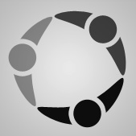
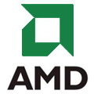

<div id='gm-work' class='gm-content-pane'>
  <ul class="content-list work">
    <li>
      <a></a>
      <div class="tooltip">I wrote what is now a critical part of Facebook's security infrastructure: a backend service that helps keep out the non-humans. It was written using C++ with multithreading libraries, PHP, Thrift, Memcached, and several internal tools. It is served out of multiple datacenters, and scales infinitely with the computing resources it is given. Today the service is deployed and serving many millions of requests per day.</div>
    </li>
    <li>
      <a></a>
      <div class="tooltip">CommSequence is a stealth-mode start-up working out of Montreal.</div>
    <li>
      <a></a>
      <div class="tooltip">AMD was my first software job</div>
    </li>
    <li id="primal">
      <a></a>
      <div class="tooltip">I learned the basics of web development working at Primal in 2009. My major project was a web-app that expressed the user’s thoughts in the form of a web page. It was the centerpiece of their presentation at the 2009 DEMO conference. I also wrote the first practical consumer application on the Primal Fusion platform as the winning entry for the in-office coding competition. Second place was a team of the founder and the director of platform development!</div>
    </li>
    <li>
  </ul>
</div>
